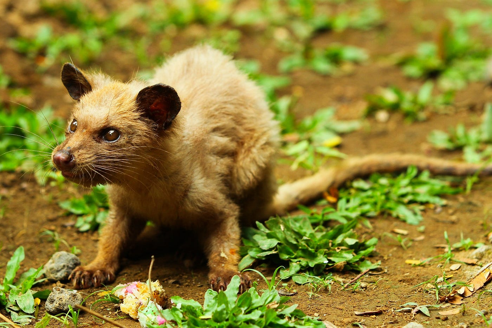

Which is the most expensive coffee
in the world?
Kopi luwak
Kopi luwak, aka. civet coffee, is one of the most expensive coffees in the world, selling for between US$100 and $600 per pound in 2010. The specialty Vietnamese weasel coffee, which is made by collecting coffee beans eaten by wild civets, is sold at US$3,000 per kilogram.
Where is it from?

Kopi luwak is a coffee originates from Indonesia that consists of partially digested coffee cherries, which have been eaten and defecated by the Asian palm civet. The cherries are fermented as they pass through a civet's intestines, and after being defecated with other fecal matter, they are collected.